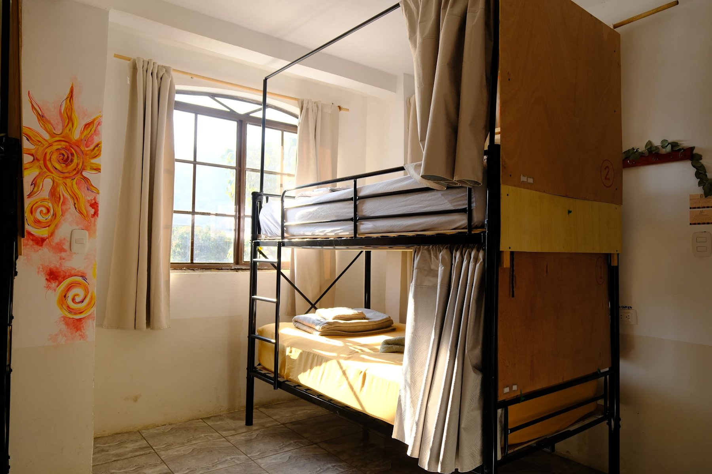

SAN JUAN LA LAGUNA · GUATEMALA
Find
your element.
A little retreat to slow down,
share and connect with what matters.
Living culture. Nature. Connection.Discover 4 Elementos
△ Earth≋ Water☼ Fire〰 Air
A PLACE TO BELONG
Some journeys
stay with you.
Bring your curiosity. Slow down. Make room for an unexpected conversation and get to know San Juan up close.
We are a small hostel with a community spirit. Details made by Atitlán artisans and cultural exchange give your stay a deeper meaning.
Discover our way of travelling
REST YOUR WAY
Your place in San Juan.
Agua, Fuego and Tierra: three rooms,
two shared dorms and one private room.
A SPACE OF YOUR OWN
Private
room
A double bed to enjoy
your own space.
Free Wi-FiHot showersBed linenTea and coffeeDrinking water
GO EXPLORING
Connect with the place.
And its people.

Stories woven together
Weaving, embroidery and natural dyes with women from the community.
A fresh view of the lake
Hikes to the Mayan Face and kayaking to explore Atitlán.
Better when shared
Traditional cooking and shared dinners. Ask our team about activities and availability.
A GLIMPSE OF LIFE HERE
Small spaces. Full of life.
YOUR JOURNEY STARTS HERE
See you
in San Juan.
02 Avenida, Zona 2, Callejón la Cuchilla.
San Juan La Laguna, Guatemala.
An easy arrival
Ask about shuttles from Antigua or Guatemala City.
Arrange my transferCheck-in and check-out
Check-in: 14:00–20:00.
Check-out: by 11:00.
Before you book
Cash payments. Confirm the total rate, taxes and conditions when booking. Quiet hours: 22:00–07:00.
MAKE ROOM FOR A NEW STORY
Your next journey
has a home here.
For questions about your stay, contact our team directly.
Ask us directly about dates, rates and availability.